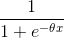
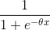

Introduction to Neural Networks with DeepLearning4J
Table of Contents
- Fundamentals of Machine Learning
- Something else
What is Machine Learning?
Extracting Knowledge from raw data in the form of a model
- Decision trees
- Linear Models
- Neural Networks
Arthur Samuel quote
- "Field of study that gives computers the ability to learn without being explicitly programmed"
A Diagram

Machine Learning Compared to Data Science/Mining
- Data Mining
- The process of extracting information from the data
- Uses Machine Learning
- Data Science
- Data Mining from the lens of a statistician
- Venn Diagrams
- A way to get a raise
- A more agreeable Actuary
- A statistician using a Mac
Framing the Questions
- To build models we have to define
- What is our training data (“evidence”)?
- What kind of model (“hypothesis”) is appropriate for this data?
- What kind of answer (“inference”) would we like to get from the model?
- These questions frame all machine learning workflows
Ax = b
- In neural networks we’re solving systems of (non-linear) equations of the form
- Ax = b
- A matrix
- This is our set of input data converted into an array of vectors
- x vector
- The parameter vector of weights representing our model
- b vector
- Vector of output values or labels matching the rows in the A matrix
Ax = b Visually

Let’s Talk Linear Algebra
- Scalars
- Elements in a vector
- In compsci synonymous with the term “variable”
- Vectors
- For a positive integer n, a vector is an n-tuple, ordered (multi)set, or array of n numbers, called elements or scalars
- Matricies
- Group of vectors that have the same dimension (number of columns)
Solving Systems of Equations
- Two general Methods
- Direct method
- Iterative methods
- Direct method
- Fixed set of computation gives answer
- Data fits in memory
- Ex: Gaussian Elimination, Normal Equations
- Iterative methods
- Converges after a series of steps
- Stochastic Gradient Descent (SGD)
Vectorization
- To solveAx = b Ax = b with optimization methods such as SGD
- We have to get raw data into the vectors and matrices
- This ends up being a lot of work
- most folks never consider this phase to be sniff “real machine learning”
- Actually it's pretty key to building good models
Quick Statistics Review: Probability
- Probability
- We define probability of an event E as a number always between 0 and 1.
- In this context the value 0 infers that the event E has no chance of occurring and the value 1 means that the event E is certain to occur.
- The Canonical Coin Example
- Fair coin flipped, looking for heads/tails (0.5 for each side)
- Probability of sample space is always 1.0
- P( Heads ) = 0.5 every time
Probability Distributions
- A specification of the stochastic structure of random variables
- In statistics we rely on making assumptions about how the data is distributed
- To make inferences about the data
- We want a formula specifying how frequent values of observations in the distribution are
- And how values can be taken by the points in the distribution

- And how values can be taken by the points in the distribution
High-Level Machine Learning
- Determine
- Output desired (“question to be answered”)
- Input data to build model (“evidence”)
- Appropriate model (“hypothesis”)
- Setup data in Ax = b form
- For linear models and neural networks
- Then Optimize the x parameter vector
Fitting the Training Data

Optimization
- Iteratively adjust the values of the x parameter vector
- Until we minimize the error in the model
- Error = prediction – actual
- Loss functions measure error
- simple/common loss function:
- “mean squared error”
- How do we make choices about the next iterative “step”?
- Where “step” is how we change the x parameter vector
Convex Optimization

Gradient Descent
- Optimization method where we consider parameter space as
- “hills of error”
- Bottom of the loss curve is the most “accurate” spot for our parameter vector
- We start at one point on the curved error surface
- Then compute a next step based on local information
- Typically we want to search in a downhill direction
- So we compute the gradient
- The derivative of the point in error-space
- Gives us the slope of the curve
- So we compute the gradient
Stochastic Gradient Descent
- With basic Gradient Descent we look at every training instance before computing a “next step”
- With SGD with compute a next step after every training instance
- Sometimes we’ll do a mini-batch of instances
TH-clean this up
SGD Visually Explained

Underfitting and Overfitting
- Underfitting
- Our model does not learn the structure of the training data well enough
- Doesn’t perform on new data as well as it could
- Overfitting
- Our model gives tremendous accuracy scores on training data
- However, our model performs poorly on test data and other new data

Classification
- A type of answer we can get from a model
- Example:
- “Is this an image of a cat or a dog?”
- Binary classification
- Classes: { cat, dog }
- Binary classification is where we have only 2 labels
- Example: { positive, negative }
- Multi-Label Classification
- N number of labels
Supervised vs Unsupervised Learning
- Supervised Learning
- We give the training process labels (“outputs”) for every training input data row
- Model learns to associate input data with output value
- Unsupervised Learning
- No labels
- Model attempts to learn structure in the data
Regression
- Where we seek a continuous value output from the model
- Example: “predict the temperature for tomorrow”
- Output: 75F
- Example: “predict price of house based on square footage”
- Output: $250,000.00
Clustering
- Typically unsupervised learning
- “K-Means Clustering”
- Example
- “cluster K groups of similar news articles together”
Logistic Regression
- 3 parts to Logistic Regression Model
- Hypothesis (logistic function): 
- Gives us a prediction based on the parameter vector x and the input data features
- Cost Function
- Example: “max likelihood estimation”
- Tells us how far off the prediction from the hypothesis is from the actual value
- Update Function
- Derivative of the cost function
- Tells us what direction / how much of step to take [ more notes, gradient, etc ]
- Hypothesis (logistic function): 
Evaluation and The Confusion Matrix
- Table representing
- Predictions vs Actual Data
- We count these answers to get
- True Positives
- False Positives
- True Negatives
- False Negatives
- Allows us to evaluate the model beyond “average accurate” percent
- Can look at well a model can perform when it needs to be more than just “accurate a lot”

- Can look at well a model can perform when it needs to be more than just “accurate a lot”